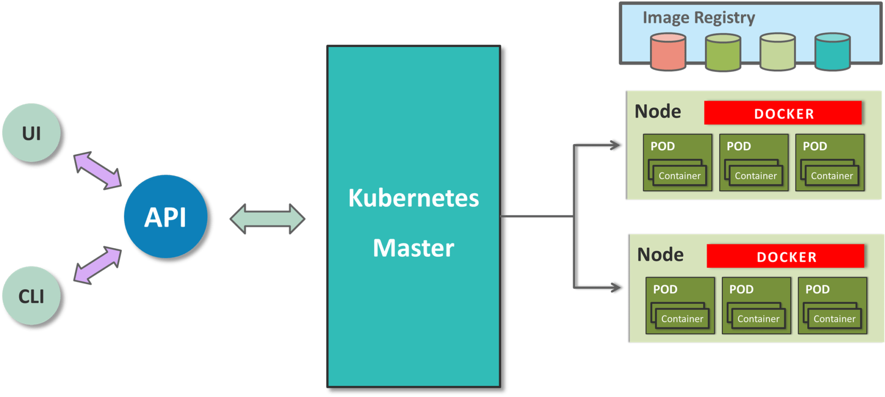

First step into Kubernetes
(And ShinyProxy)
Link to this presentation: bit.ly/2Vt9vZp.
Note: slides are two dimensional. Navigate with arrow keys (⇦ ⇧ ⇨ ⇩) and [Esc] (mini map).
What it is about
- Basic concepts used in Kubernetes.
- Architecture of our Kubernetes cluster running ShinyProxy.
- Detailed instructions (YAML files) provided in separate documents.
What it is not
- Complete guide to Kubernetes nor ShinyProxy. Only absolutely required knowledge is included.
- Description of final version of the project. It's still live and ongoing.
What is the objective of the project?
- Launch POC ShinyProxy on self-hosted Kubernetes. Test if performance and usability will be good enough.
- Learn Kubernetes basics to be able to use Kubernetes-as-a-service in the future.
- Create architecture that will let us run other web applications in the future.
Why this presentation?
- Couldn't find good introduction to self-hosted Kubernetes.
- I took me about two weeks to make my first Kubernetes cluster work. I'm sharing my experience and knowledge.
Organizational background
- We wanted to start using Kubernetes in our projects.
- We also wanted to test ShinyProxy. Free Shiny has a limit of one simultaneous backend task per dashboard. ShinyProxy can overcome this limit.
Organizational background
- ShinyProxy runs dashboards in Docker containers. It can be used with plain Docker (harder scaling and no built-in HA). But it also supports Kubernetes (easier scaling and built-in HA).
- We joined those two projects together.
Shiny Example
Source: (BRAIAN)Shiny limitation

What have we achieved so far?
- Development Kubernetes cluster on 3 virtual machines. Installed using kubespray. ShinyProxy running on it. CI/CD using GitLab.
- Personal testing/development Kubernetes installations.
- minikube
- kubespray on Vagrant on VirtualBox with Flannel
- kubespray on Vagrant on libvirtd (KVM) with Calico
Kubernetes Architecture
Kubernetes Architecture

(source)
{kind=link}
Kubernetes objects
(source)
Service
When pod is created it receives random IP address from node's network. We need a well-known contact point (IP address) to access services running in pods. That's what Service objects are for.
Service object can be a frontend for many backend pods.
Service
Types of Service:- ClusterIP - Service receivers IP address reachable from within the cluster.
- NodePort - Exposes the service on each Node’s IP at a static port.
- LoadBalancer - Exposes the service externally using a load balancer.
NodePort

(source)
Cloud Load Balancer
(source)
Bare metal Load Balancer problem

(source)
Traditional Load Balancer
(source)
Host Network

(source)
MetalLB
(source)
MetalLB
- In layer 2 mode, one machine in the cluster takes ownership of the IP addresses and forwards traffic to given Service.
- Assigns IP (externalIP) addresses to Services.
- You have to tell MetalLB what range of addresses it can use.
MetalLB
- "Traditional" load balancer vs. MetalLB + Ingress.
- Also supports BGP mode.
- To expose a service externally, create it with type LoadBalancer. MetalLB will assign ExternalIP to it.
Network schema without MetalLB
Network schema
MetalLB limitations
- Failover mechanism, like VRRP (keepalived). It takes a few second to elect new master.
-
- Or even a few minutes.
- But we need to start with something...
- MetalLB master node can be a bottleneck/SPOF.
MetalLB installation
- Follow documentation.
- Create ConfigMap and assign layer 2 address pool.
Ingress
(source)
Ingress
- Kubernetes-as-a-service providers provide their own load balancers (💰). Less things to worry about for us.
- Ingress controller finds all objects of kind Ingress in ALL namespaces when generating configuration.
Ingress installation
- Follow documentation.
- In ingress-nginx Service change Type from NodePort (default) to LoadBalancer.
How to use Ingress
- Create Pod with web application and accompanying Service.
- Create Ingress object in the same namespace as Pod.
How to use Ingress with SSL
- Create Secret with SSL certificate.
- Add tls section to Ingress object.
How we use Ingress
- DNS *.kubernetes.example.com pointing to Internet-facing firewall cluster's IP.
- Ingress has SSL certificate for *.kubernetes.example.com.
- User (programmer) can create any Ingress object that uses subdomain from kubernetes.example.com and it will be automatically accessible from the Internet.
Sidecar
(source)
Sidecar
- Additional container in a pod that extends the main container or provides service(s) for the main container.
- ShinyProxy uses sidecar to access Kubernetes cluster to manage pods with dashboards.
Sidecar
ShinyProxy deployment uses sidecar container (source):kind: Deployment
# [...]
spec:
# [...]
template:
# [...]
spec:
containers:
# [...]
- name: kube-proxy-sidecar
image: kube-proxy-sidecar
imagePullPolicy: Never
ports:
- containerPort: 8001
Namespace
- Namespaces can be used to join objects in groups. It's useful for access control and separating applications.
- Names of objects need to be unique only in scope of their namespace.
Label
- Key-value pairs assigned to objects.
- Labels can be used by objects to reference other objects.
Label
Assign:
metadata:
labels:
run: shinyproxy
Use:
selector:
matchLabels:
run: shinyproxy
Secret
- Dedicated object that can store e.g. Docker Registry login and password, SSL certificate, SSH key pair.
- It's safer than to save secrets inside container images.
- Secrets can be materialized as files on volume mounted to container or can be set as environmental variables.
- You can give users access to Secrets and let them manage them on their own.
- ShinyProxy can read Docker Registry login and password from Kubernetes Secret.
ConfigMap
- Dedicated object that stores key-value pairs.
- Allows to have one generic container image that is customized at runtime with ConfigMaps.
- ConfigMaps can be materialized as files on volume mounted to container or can be set as environmental variables.
DaemonSet
- Make sure that (all) Nodes run a given Pod.
- Useful to run for example storage daemon, logs collection daemon or monitoring agent on every node.
ReplicaSet
- It makes sure that given number of identical Pods are running.
- It stops/starts/restarts Pods when needed.
Deployment
- Manages Pods and ReplicaSets.
- Allows to change from one state to another (for example rolling upgrade of Pods in ReplicaSet).
kubespray
- kubespray is a set of Ansible playbooks that can be used to deploy or modify Kubernetes cluster.
- Also provides Vagrantfile to deploy Kubernetes on virtual machines.
kubespray on Vagrant
- My recommendation: increase default RAM from 2GB to 8GB, CPU from 1 to 4, disk from 20GB to 40GB.
- When machines have two network interfaces...
- ...and Flannel is being used, set flannel_interface: 'eth1' in inventory/NAME/group_vars/k8s-cluster/k8s-net-flannel.yml.
- ...and Calico is being used, set calico_ip_auto_method: "interface=eth1.*" in roles/network_plugin/calico/defaults/main.yml.
minikube
- My recommendation: increase default RAM 16GB, CPU to 8, disk to 50GB.
Administering Kubernetes
- kubectl
- ~/.kube/config
User Accounts
- X509 certificates can be used to authenticate clients.
- Client certificates can indicate a user’s group memberships using the certificate’s organization fields.
Adding new user
- Create SSL certificate for user.
- Sign it with Kubernetes CA (/etc/kubernetes/ssl in case of kubespray).
- Add new credentials and context to ~/.kube/config.
Assigning rights
- Role (named set of permissions)
- RoleBinding (assign Role to User(s))
- ClusterRole (named set of cluster-wide permissions)
- ClusterRoleBinding (assign ClusterRole to User(s))
- User, Group, ServiceAccount
ShinyProxy Architecture
ShinyProxy Dashboard Usage
What happens when user opens dashboard?
- User logins to ShinyProxy.
- User opens link to selected dashboard.
- ShinyProxy displays waiting screen.
- ShinyProxy sends request to Kubernetes to start Pod with dashboard.
- Kubernetes downloads latest container image from Repository (if needed).
ShinyProxy Dashboard Usage
What happens when user opens dashboard?
- Kubernetes starts Pod with dashboard.
- Shiny in container starts.
- Shiny executes dashboard's code.
- When Shiny in container is running, then ShinyProxy shows the dashboard to user.
ShinyProxy Dashboard Change
What happens when developer changes dashboard's code?
- Developer commits changes to git repo.
- GitLab Runner builds new container image and pushes it to Registry.
- User has to close the dashboard, wait one minute (or login again) and open dashboard.
New Dashboard Creation
How to create new dashboard?
- Developer creates new git repository with dashboard's code.
- GitLab Runner builds new container image and pushes it to Registry.
- GitLab Schedule (once per hour) generates ShinyProxy configuration (with list of dashboards) and restarts ShinyProxy (if needed).
- Users can access new dashboard.
Build once, deploy anywhere
{kind=link}
Good practices
- At the beginning run additional services (for example Docker Registry) outside of Kubernetes.
What was hard?
- Didn't know where to look for problems. Googling and testing differend options, looking for one that will make everything suddenly start working.
- tcpdump, debugging, reading kubespray's code, reading logs.
- I was trying to make MetalLB work. Problem was with Calico.
- I was trying to make Pod start. Problem was with not enough disk space.
What was unexpected?
- ShinyProxy Pods are leaking.
Useful commands
Get pod's name using selector.
# kubectl get --no-headers=true pods \
--selector=run=shinyproxy -n shinyproxy1 \
-o custom-columns=:metadata.name
shinyproxy-54b6c8b585-mxvhv
Useful commands
Check status of the service.
kubectl describe service SERVICE_NAMESometimes status messages and logs are attached to the Service object.
Useful commands
List of nodes.
kubectl get nodesUseful commands
Calico.
calicoctl get nodes
calicoctl node statusUseful commands
List of all pods from all namespaces.
kubectl get pods --all-namespaces -o wide --show-labelsUseful commands
Details of all Pods from default namespace.
kubectl describe podsUseful commands
Run Pod with container using selected image.
kubectl run POD_NAME --image=IMAGE_URI ARGSUseful commands
Execute command in running container.
kubectl exec POD -- COMMAND ARGSkubectl exec POD --stdin --tty /bin/sh -c CONTAINER \
-n NAMESPACEkubectl exec POD -n NAMESPACE -i -t -- bash -ilUseful commands
Apply YAML file.
kubectl apply -f deployment.yamlkubectl apply -f https://server/path/deployment.yamlUseful commands
Edit existing object.
kubectl edit TYPE NAMEUseful commands
Show logs of container in Pod.
kubectl logs POD -n NAMESPACE -c CONTAINERUseful commands
Deleting objects.
kubectl -n NAMESPACE delete pod PODkubectl delete deployment -n NAMESPACE DEPLOYMENT_NAMEUseful commands
Create Kubernetes secret with SSL certificate.
kubectl create secret tls NAME --key privkey.pem \
--cert fullchain.pemUseful commands
Get YAML definition of a given object.
kubectl get pods/POD -o yamlUseful commands
Get name of object using selector.
kubectl get --no-headers=true TYPE --selector=SELECTOR \
-n NAMESPACE -o custom-columns=:metadata.nameUseful commands
Using kubectl with non-default context.
kubectl --context=CONTEXT get podsUseful commands
Using kubectl with non-default config file.
kubectl replace --force -f sp-deployment.yaml \
--kubeconfig=/path/.kube/configUseful commands
Replace Pod/Deployment.
kubectl replace --force -f FILE.yamlUseful commands
Replace Pod/Deployment. Works when there is no original YAML file.
kubectl get pod --namespace=NAMESPACE -o yaml POD | \
kubectl replace --force -f -Useful commands
Update SSL certificate.
kubectl create secret tls NAME --namespace=NAMESPACE \
--key privkey.pem --cert fullchain.pem --dry-run \
-o yaml | kubectl apply -f -Kubernetes troubleshooting
- kubectl get nodes
- Check system logs on all nodes.
- dmesg
- kubectl cluster-info dump
- kubectl get events \
--namespace=NAMESPACE - kubectl logs POD --namespace=NAMESPACE
- Run test application.
- Check status of all Pods.
My Kubernetes notes
Instructions how to setup Kubernetes cluster.How to install Kubernetes
- Install Ansible.
- Download kubespray.
- (Optional) Adjust Vagrantfile.
- Adjust kubespray's configuration.
- Install kubectl.
How to install Kubernetes
- ~/.kube/config
- Ensure that all Pods are running.
- Run test application.
- Install MetalLB and configure network addresses.
- Install Ingress.
- Create Secret with SSL certificate for Ingress.
My ShinyProxy notes
Instructions how to install ShinyProxy on Kubernetes.How to install ShinyProxy
- Create dedicated Namespace.
- Create Kubernetes account for ShinyProxy.
- Role, RoleBinding.
- Create Secret for Docker Registry.
- Create first container image with Shiny and dashboard's code and upload it to Registry.
- Create sidecar's container image and upload it to Registry.
How to install ShinyProxy
- Create ShinyProxy's container image and upload it to Registry.
-
- Remember about Kubernetes account's SSL certificates.
- application.yml (ShinyProxy configuration).
- Deployment, ClusterRoleBinding, Service.
- Ingress.
Current status of project
- ShinyProxy is running on our development Kubernetes cluster.
- CI/CD is working.
- We are fixing bugs and implementing required features.
IN THE FUTURE
- HA testing.
- Persistent data storage (or data extraction from Pods).
- Centralized logs storage.
IN THE FUTURE
- Monitoring (Prometheus?).
- More security restrictions (Docker Registry, secrets).
- Discover how to expose to the Internet services that do not talk HTTP(S) (TCP only).
- Test OpenShift.
Thank you
Fin.
About Me
|
Maciej Korzeń DWH DevOps Team Leader @ IIIT Owner @ setgid Maciej Korzeń maciek@korzen.org, maciek@setgid.com |